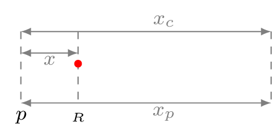
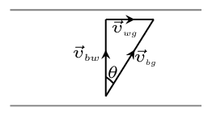

Section 3.2 Examples A
Given the velocity versus time graph as shown below: 
- Construct a table showing distance traveled, velocity, and acceleration at various times throughout the motion and
- Plot graphs of distance versus time and acceleration versus time.
Solution.
-
Select several critical points on the \(v\) versus \(t\) graph as shown in the given figure. Measure the height of each point and tabulate it as velocity \(v\text{.}\) Measure the area under the curve and tabulate it as position \(x\text{.}\) Measure the slope of curve and tabulate it as the acceleration \(a\text{.}\)
Points \(t (s)\) \(x (m)\) \(v (m/s)\) \(a (m/s^2)\) \(x=v_{o}t+\frac{1}{2}a t^2\) A \(0\) 0 0 --- \(x_{1}=0\) B 4 4 2 \(\frac{2}{4} = 0.5\) \(x_{2} = 0+\frac{1}{2}(0.5)(4^2)=4\) C 7 4+6=10 2 0 \(x_{3} = 2\times 3 =6\) D 9 10+2=12 0 \(\frac{-2}{2} = -1\) \(x_{4} = 2\times 2+\frac{1}{2}(-1)(2^2) =2\) E 13 12-8=4 -4 \(\frac{-4}{4} =-1\) \(x_{5} = 0+\frac{1}{2}(-1)(4^2) =-8\) F 20 4-14=-10 0 \(\frac{4}{7} = 0.57\) \(x_{6}=-4\times 7+\frac{1}{2}(0.57)(7^2) =-14\) - Plot this tabulated data as shown below:

Example 3.2.2.
Given \(x(t) = A t^{3} + B t,\) where \(A = 10 m/s^{3}\) and \(B = 100 m/s\text{.}\) Find each of the following:
- \(\displaystyle x(2s),\)
- \(v\text{,}\)
- \(v(3s)\text{,}\)
- \(a\text{,}\)
- \(a(4s)\text{.}\)
Solution.
- \(\displaystyle x(2s) = x(t) = A t^{3} + B t, = (10 m/s^{3}) (2 s)^{3} + (100 m/s) (2 s) = 280 m \)
- \(v= \frac{(x_{2} - x_{1})}{(t_{2} - t_{1})} = \frac{(280 m - 110 m)}{(2s - 1s)}= 170 m/s \text{,}\)
- \(v(3s) = \frac{\,dx}{\,dt} = 3 A t^{2} + B = 3 (10m/s^{3}) (3s)^{2} + 100 m/s = 370 m/s \text{,}\)
- \(a= \frac{(v_{2} - v_{1})}{(t_{2} - t_{1})} = \frac{(370m/s - 130m/s)}{(3s-(-1s))} = 60 m/s^{2}\text{,}\)
- \(a(4s) = \frac{\,dv}{\,dt} = 6 A t = 240 m/s^{2}\text{.}\)
Example 3.2.3.
A car moving with constant velocity of 10 m/s passes a policeman at rest and proceeds to run a red light 20 m farther down the road. The policeman requires 5 seconds to start his motorcycle, but then accelerate after the car with a constant acceleration of \(3 m/s^{2}\text{.}\)

- How long after starting out does it take for the policeman to overtake the car?
- How far does the policeman travel before overtaking the car?
- How fast will the policeman be moving when he gets to the car?
Solution.
Suppose \(p\) is a policeman at rest and \(R\) is a red light which is 20 m from the position of police. Hence time taken by the car to pass the traffic signal is given by
\begin{equation*}
x=v_{c}t_{r}
\end{equation*}
\begin{equation*}
or, \quad t_{r}=\frac{x}{v_{c}}=\frac{20}{10}=2 s
\end{equation*}
Now car is moving with a constant velocity, therefore total distance traveled by the car before caught by police is given by
\begin{equation}
x_{c}=v_{c} t_{c}=10t_{c}\tag{3.2.1}
\end{equation}
Total distance travelled by the policeman to catch the car is given by
\begin{equation}
x_{p}=u_{p} t_{p}+\frac{1}{2} at_{p}^{2} =0+\frac{1}{2}\cdot 3\left(t_{c}-2-5\right)^{2}\tag{3.2.2}
\end{equation}
where initial velocity of policeman \(u_{p}=0\) and total time traveled by the policeman \(t_{p}=t_{c}-(2+5)\)
\begin{equation*}
\because x_{c}=x_{p}
\end{equation*}
\begin{equation*}
or,\quad 10t_{c} = \frac{3}{2}\left(t_{c}-7\right)^{2}
\end{equation*}
\begin{equation*}
20t_{c}=3\left(t^{2}_{c}-14t_{c}+49\right) =3t^{2}_{c}-42t_{c}+147
\end{equation*}
\begin{equation*}
\therefore \quad t_{c}=\frac{+62\pm\sqrt{62^{2}-4\cdot 3\cdot147}}{2\cdot 3} =17.93 s \text{or,} 2.73 s
\end{equation*}
- Therefore the policeman caught the violator in \(17.93 s=\approx 18 s\text{.}\) Neglect 2.73 s as it is less time than the policeman started his motorcycle.
- \(\displaystyle x_{c}=10\times 18 =180 m\)
- \(v_{p}=u_{p}+at_{p}= 0+3\times 18=54 m/s\text{.}\)
Example 3.2.4.
A man drops a stone into a well and hears the splash 5 seconds later. If the speed of sound is \(345 m/s\text{,}\)
- how deep is the well?
- How fast was the stone traveling when it hits the water?
Solution.
Given:
\begin{equation*}
v_{o1} = 0; \quad a_{1} = g = -9.8 m/s^{2}; \quad v_{2} = 345 m/s
\end{equation*}
The depth of well can be calculated by
\begin{equation*}
y_{f} - y_{o} = v_{o1} t_{1} + \frac{1}{2} a t^{2}_{1}
\end{equation*}
where \(v_{o1}\text{,}\) is the initial velocity, \(y_{f}\) and \(y_{o}\) are the final and initial position of the stone and \(y_{f} - y_{o} = -h-0 =-h\) is the depth of the well, \(a = g \) is the acceleration due to gravity, and \(t_{1}\text{,}\) is the time taken by stone to reach the water level in the well.
\begin{equation}
-h= 0+\frac{1}{2} g t^{2}_{1} = -\frac{1}{2} (9.8) t^{2}_{1} \qquad \Rightarrow \quad h=4.9t^{2}_{1}\tag{3.2.3}
\end{equation}
Now sound travels back at a constant speed.
\begin{equation}
h = v_{2} t_{2}\tag{3.2.4}
\end{equation}
But the distance traveled by the stone and sound are equal to the depth of the well, and total time is 5 seconds. Hence,
\begin{equation*}
h_{stone} = h_{sound}; \quad t_{1}+ t_{2} = 5 s
\end{equation*}
\begin{equation*}
4.9t^{2}_{1} = v_{2} t_{2}
\end{equation*}
from (3.2.3)–(3.2.4).
\begin{equation*}
or, \quad 4.9t^{2}_{1} = 345(5 - t_{1}) \qquad [\because t_{2} = 5s - t_{1}]
\end{equation*}
\begin{equation*}
\text{or,}\quad 4.9t^{2}_{1}+345t_{1}-1725 =0
\end{equation*}
\begin{equation*}
\text{or,}\quad t=\frac{-345\pm\sqrt{345^{2}-4\cdot4.9\cdot(-1725)}}{2\cdot4.9}
\end{equation*}
\begin{equation*}
\therefore t_{1}= 4.68 s; \qquad t_{2}=0.32 s;\quad \text{and}\quad h = v_{2} t_{2} = 110.4 m
\end{equation*}
The final velocity of stone when it touches water
\begin{equation}
v_{f} = v_{o1} + a t_{1} \tag{3.2.5}
\end{equation}
\begin{equation*}
v_{f} =0 - g t_{1} = -45.86 m/s \quad (downwards)
\end{equation*}
Example 3.2.5.
A pilot in an airplane traveling with an air speed of 100 mph wants to fly to a city 200 miles due east of his current position. There is a 20 mph wind blowing from the south-west.
- At what heading should the pilot point his aircraft?
- How long will it take for the plane to reach its destination?
Solution.
Given: \(v_{pa} = 100 mph;\) \(x_{pg} = 200 m\hat{i};\) \(v_{ag} = 20 mph\) at \(45^{o} \) W of S \(= 20 mph (- \sin 45^{o}\hat{i} - \cos 45^{o}\hat{j})\text{.}\) 
Vector Equations:
\begin{equation*}
\vec{v}_{pg} = \vec{v}_{pa} + \vec{v}_{ag}
\end{equation*}
\begin{equation*}
\vec{x}_{pg} = \vec{v}_{pg} t
\end{equation*}
Scalar Equations:
\begin{equation*}
v_{pg} = v_{pa} \sin\theta - v_{ag} \sin 45^{o};
\end{equation*}
\begin{equation*}
0= v_{pa}\cos\theta - v_{ag} \cos 45^{o};
\end{equation*}
\begin{equation*}
x_{pg} = v_{pg} t
\end{equation*}
- \begin{equation*} \cos\theta = v_{ag} cos 45^{o} / v_{pa} = 20 \cos 45^{o} / 100 = 0.1414 \end{equation*}\begin{equation*} \therefore \theta = 81.87^{o} \end{equation*}
- \begin{equation*} v_{pg} = v_{pa} \sin\theta - v_{ag} \sin 45^{o} = 100 \sin\theta - 20\sin 45^{o} = 84.85 mph \end{equation*}\begin{equation*} \therefore t = x_{pg} / v_{pg} = 2.36 h \end{equation*}
Example 3.2.6.
A man has two balls, he throws the first one straight up 10 meters high. At the instant the first rock reaches its highest point, he throws the second rock upward with the same initial speed as the first.
- What was the initial velocity of the first ball?
- How long will it take the second ball to pass the first?
- At what height will the two balls pass one another?
- At that time, which ball is traveling the faster?
- How long was the first ball in the air?
Hint.
Solution.

Draw a picture at each critical time for the above motion and label your drawings.
- The velocity of first ball is given by\begin{equation*} v_{f}^{2}=v_{i}^{2}+2a(x_{f}-x_{i}) \end{equation*}\begin{equation*} \text{or,}\quad 0 = v^{2}_{1i}+2(-9.8) 10 \end{equation*}\begin{equation*} \therefore v_{1i} = 14 m/s=v_{2i} \end{equation*}
- The first ball passes the second ball at time \(t_{2}\) when the first ball falling from its maximum height\begin{equation*} h=|h_{1}|+ |h_{2}|=(y_{1f}-y_{1i})+(y_{2f}-y_{2i}) \end{equation*}\begin{equation*} 10= -(v'_{1i}t_{2}-\frac{1}{2}gt^{2}_{2})+(v_{2i}t_{2}-\frac{1}{2}gt^{2}_{2}) \end{equation*}\begin{equation*} = 0+v_{2i}t_{2} =14 t_{2} [\because (y_{1f}-y_{1i})\quad \text{is -ve}] \end{equation*}\begin{equation*} \therefore t_{2}=\frac{10}{14} = 0.7143 s \end{equation*}
- \begin{equation*} h_{2}= v_{2i}t_{2}-\frac{1}{2}gt^{2}_{2}=14 (0.7143)-4.9(0.7143)^{2} = 7.50 m \end{equation*}
- The velocity of ball I at that time\begin{equation*} v_{1c} = 0-(9.8)t_{2} = -9.8\times (0.7143) = -7.0 m/s \end{equation*}The velocity of ball II at that time\begin{equation*} v_{2c} = 14-(9.8)t_{2} = 14-9.8\times 0.7143 = 7.00 m/s \end{equation*}Hence, they have the same velocity at that time, ball I is falling down and ball II is going up.
- Time taken by ball I for maximum height \(v_{f}=v_{i}+at\text{.}\)\begin{equation*} 0=14-9.8t \quad \Rightarrow t = \frac{14}{9.8} =1.43 s \end{equation*}Therefore total time for ball I in air is given by \(t=1.43+1.43=2.86s.\)
Alternative,
\begin{equation*}
\left[y_{f}-y_{i}=0=14t-\frac{1}{2}9.8t^{2} \Rightarrow t = \frac{14\pm\sqrt{14^{2}}}{9.8}= 2.86 s \right]
\end{equation*}
Example 3.2.7.
A boy at playground drives two miles home at 30 mph to get her ball and immediately drives back at 20 mph. What was his average velocity for the round trip?
Solution.
\begin{equation*}
v_{av}=\frac{x_{f}-x_{i}}{t_{f}-t_{i}} = \frac{\Delta s}{\Delta t}=0
\end{equation*}
Note that the average speed is not zero.
Example 3.2.8.
A boy going from home to school walks at 1m/s for (1/3) of the time and 1.5 m/s for rest of the time. He forgot his physics notebook and thus returns immediatley to home. He jogs half of the distance at 1 m/s and rest of the distance at 1.5 m/s. Find his average speed for the trip.
Solution.
From home (H) to school (S).
\begin{equation*}
d=v_{1}t_{1}+v_{2}t_{2} \quad = 1\times \frac{1}{3}t + 1.5\times(1-\frac{1}{3}t) = \frac{4}{3}t
\end{equation*}
\begin{equation*}
\therefore \quad v_{HS} = \frac{d}{t} = \frac{4}{3} m/s
\end{equation*}
From school (S) to home (H).
\begin{equation*}
t=t_{1}+t_{2} \quad = \dfrac{\frac{d}{2}}{v_{1}} + \dfrac{\frac{d}{2}}{v_{2}} = \frac{d}{2}\left( \frac{1}{1}+ \frac{1}{1.5}\right) = \frac{d}{2}\left( \frac{1}{2}+\frac{1}{3}\right) = \frac{5d}{6}
\end{equation*}
\begin{equation*}
or, \quad v_{SH} = \frac{d}{t} = \frac{6}{5} m/s
\end{equation*}
\begin{equation*}
\therefore \quad v_{avg} = \dfrac{v_{HS}+ v_{SH}}{2} =\frac{1}{1} \left[\frac{4}{3} + \frac{6}{5}\right] = 1.26 m/s
\end{equation*}
Example 3.2.9.
The position of an object moving in a straight line is given by \(x = A + Bt + Ct^{2}\text{,}\) where \(A = 1.0 m, B = 2.0 m/s\) and \(C = - 3.0 m/s^{2}\text{.}\)
- What is its average velocity for the interval from \(t = 0\) to \(t = 2.0 s\text{?}\)
- What are its (instantaneous) velocities at \(t = 0\) and \(t = 2.0 s\)
- What is its acceleration at each of these times?
Solution.
- \begin{equation*} v_{av}=\frac{\Delta s}{\Delta t}=\frac{\left(A + Bt_{2} + Ct^{2}_{2}\right)-\left(A + Bt_{1} + Ct^{2}_{1}\right)}{t_{2}-t_{1}} \end{equation*}At \(t_{1}=0, t_{2}=2.0s\text{,}\)\begin{equation*} v_{av} = \frac{(A+2B+4C)-A}{2}=B+(2.0s)C \end{equation*}\begin{equation*} =(2.0 m/s)+(2.0s)\cdot(- 3.0 m/s^{2}) = -4.0 m/s \end{equation*}
- \begin{equation*} v(t)=\frac{\,dx(t)}{\,dt} =\frac{\,d}{\,dt} \left(A + Bt + Ct^{2}\right) = B+2Ct \end{equation*}At \(t=0\) and \(t=2.0 s\text{,}\)\begin{equation*} v(o) = B = 2.0 m/s; \end{equation*}\begin{equation*} v(2.0s) = (2.0m/s) +2 (-3.0m/s^{2})(2.0s) = -10 m/s \end{equation*}
- \begin{equation*} a(t) = \frac{\,dv(t)}{\,dt} =\frac{\,d}{\,dt} \left(B + 2Ct\right) = 2C =2(-3.0m/s^{2})= -6.0m/s^{2} \end{equation*}at \(t_{1}\) and \(t_{2}\text{.}\)
Example 3.2.10.
A boat can move at 5 \(m/s\) in still water river. If it is moving in a river in which water is flowing at 1 \(m/s\text{,}\) what is the resultant speed of the boat with respect to ground. If
- the boat goes downstream,
- the boat goes upstream, and
- the boat aim directly to the opposite bank of the river.
Solution.
Given: \(v_{bw} =5m/s, v_{wg}=1m/s \text{.}\)
- Since both boat and water moving in the same direction, resultant velocity of boat relative to ground is\begin{equation*} v_{bg}=v_{b}+v_{w} = (5+1) =6 m/s \end{equation*}

- Since boat and water are moving in opposite direction, resultant velocity of boat relative to ground is\begin{equation*} v_{bg}=v_{b}-v_{w} = (5-1) =4 m/s \end{equation*}

- Now boat is moving straight perpendicular to the direction of motion of water hence the resultant velocity of boat relative to ground is \begin{equation*} \vec{v}_{bg}=\vec{v}_{bw}+\vec{v}_{wg} \end{equation*}\begin{equation*} \therefore v_{bg} = \sqrt{5^{2}+1^{2}} =5.1m/s \end{equation*}and\begin{equation*} \theta =\tan^{-1}\frac{v_{wg}}{v_{bw}} =11^{o} \end{equation*}
Example 3.2.11.
An truck running due north with 10m/s velocity fires a bullet with 100m/s nozzle velocity due north east. What is the velocity of the bullet with respect to ground?
Solution.
x-component of bullet velocity is \(v_{stx}= 100\cos45=70.71 m/s\text{;}\) and y-component of bullet velocity is \(v_{sty}= 100\sin45=70.71 m/s\text{.}\)
\begin{equation*}
v_{x}=v_{stx}=70.71m/s;
\end{equation*}
\begin{equation*}
v_{y}=v_{tg}+ v_{stx} = 10+70.71 =81.71m/s
\end{equation*}
\begin{equation*}
\therefore v_{sg}=\sqrt{v^{2}_{x}+v^{2}_{y}}= 107.30 m/s
\end{equation*}
\begin{equation*}
\theta =\tan^{-1}\left(\frac{v_{y}}{v_{x}}\right)=\tan^{-1}\left(\frac{81.71}{70.71}\right) =49^{o}
\end{equation*}
Example 3.2.12.
A person running at 3 m/s due east, finds that the rain is dropping at 4 m/s vertically downward. Find the magnitude and direction of velocity with which rain drop hits the ground.
Solution.
Velocity of a person with respect to ground, \(v_{pg}=3 m/s\text{,}\) velocity of rain with respect to person, \(v_{rp} = 4m/s,\) and velocity of rain with respect to ground, \(v_{rg}\text{.}\) Hence, 
\begin{align}
\vec{v}_{rg} \amp = a\hat{i}+ b\hat{j}\tag{3.2.6}\\
\vec{v}_{pg} \amp = 3\hat{i} \tag{3.2.7}\\
\therefore \vec{v}_{rp}\amp = 4\hat{j} = \vec{v}_{rg}-\vec{v}_{pg} = a\hat{i}+ b\hat{j} - 3\hat{i} = (a-3)\hat{i}+ b\hat{j} \tag{3.2.8}
\end{align}
Equating on both side of the equation, we get - \(a=3 m/s,\) and \(b= 4m/s\)
\begin{equation}
\therefore \vec{v}_{rg} = 3\hat{i}+ 4\hat{j} \tag{3.2.9}
\end{equation}
Now if rain makes an angle \(\theta\) with the vertical, then
\begin{equation*}
\theta = \tan^{-1}\left(\frac{3}{4}\right) = 37^{o}
\end{equation*}
and
\begin{equation*}
v_{rg} =\sqrt{3^{2}+4^{2}} = 5
\end{equation*}
Example 3.2.13.
A person riding a bicycle with a speed of 5 m/s towards north direction, observes rain falling vertically down. If he double his speed, rain appears to meet him at \(45^{o}\) to the vertical. What is the speed of the rain? In what direction does rain fall as observed by a ground based observer?
Solution.
Velocity of a person with respect to ground, \(v_{pg}=5m/s\text{,}\) velocity of rain with respect to person, \(v_{rp}\text{,}\) and velocity of rain with respect to ground, \(v_{rg}\text{.}\) Now for case I,
\begin{align}
\vec{v}_{rg} \amp = a\hat{i}+ b\hat{j} \tag{3.2.10}\\
\vec{v}_{pg} \amp = 5\hat{i} \tag{3.2.11}\\
\therefore \vec{v}_{rp} \amp = \vec{v}_{rg}-\vec{v}_{pg} = a\hat{i}+ b\hat{j} - 5\hat{i} = (a-5)\hat{i}+ b\hat{j} \tag{3.2.12}
\end{align}
Since rain appears to fall vertically downward to a person, there is no x- component of \(\vec{v}_{rp}\text{.}\) Hence,
\begin{equation*}
a -5 =0 \qquad \Rightarrow a =5 m/s
\end{equation*}
\begin{equation}
\therefore \vec{v}_{rp} = b\hat{j} \tag{3.2.13}
\end{equation}
Again for case II,
\begin{align}
\vec{v'}_{pg} \amp = 10\hat{i} \tag{3.2.14}\\
\therefore \vec{v'}_{rp}\amp = \vec{v}_{rg}-\vec{v'}_{pg} = (a-10)\hat{i}+ b\hat{j}\tag{3.2.15}
\end{align}
But, rain appears to fall now \(45^{o}\) to the vertical, hence
\begin{equation*}
\tan 45^{o} = 1=\frac{a-10}{b} \quad \Rightarrow b=a-10 = 5-10=-5
\end{equation*}
\begin{equation*}
\therefore \vec{v}_{rg} = a\hat{i}+ b\hat{j} = 5\hat{i}-5\hat{j}
\end{equation*}
\begin{equation*}
v_{rg} =\sqrt{5^{2}+(-5)^{2}} = 5\sqrt{2}
\end{equation*}
Example 3.2.14.
If a particle motion is described as \(a = -\kappa \sqrt{v}\text{.}\) Where \(a\) is acceleration, and particle’s intial velocity is \(v_{o}\text{.}\)
- Find the distance covered by the particle before it comes to rest.
- Find the time interval of the particle when it stops.
Solution.
- \begin{equation*} a= -\kappa \sqrt{v} \end{equation*}\begin{equation*} \text{or,} \quad a= v\frac{\,dv}{\,dx} = -\kappa \sqrt{v} \end{equation*}\begin{equation*} \text{or,} \quad \frac{v\,dv}{\sqrt{v}} = -\kappa \,dx \end{equation*}\begin{equation*} \text{or,} \quad \int_{v_{o}}^{0} \frac{v}{\sqrt{v}}\,dv = -\kappa \int_{0}^{x} \,dx \end{equation*}\begin{equation*} \text{or,} \quad \int_{v_{o}}^{0} \sqrt{v}\,dv = -\kappa x \end{equation*}\begin{equation*} \text{or,} \quad -\kappa x = \left.\frac{v^{\frac{1}{2}+1}}{\frac{1}{2}+1} \right\vert_{v_{o}}^{0} = \left.-\frac{2}{3}(v)^{\frac{3}{2}} \right\vert_{v_{o}}^{0} \end{equation*}\begin{equation*} \therefore \quad x = - \frac{2}{3\kappa } v_{o}^{3/2} \end{equation*}
- \begin{equation*} \dfrac{\,dv}{\,dt} = -\kappa \sqrt{v} \end{equation*}\begin{equation*} \text{or,} \quad \dfrac{\,dv}{\sqrt{v}} = -\kappa \,dt \end{equation*}\begin{equation*} \text{or,} \quad \int_{v_{o}}^{0} \dfrac{\,dv}{\sqrt{v}} = -\kappa \int_{0}^{t} \,dt \end{equation*}\begin{equation*} \text{or,} \quad \left. \dfrac{v^{-1/2 +1}}{-1/2+1}\right\vert_{v_{o}}^{0} = -\kappa t \end{equation*}\begin{equation*} \therefore \quad t = 2\frac{\sqrt{v_{o}}}{\kappa} \end{equation*}
Example 3.2.15.
A particle starts from rest has an acceleration given as
\begin{equation*}
a = a_{o}\left(1-\frac{t}{T} \right)
\end{equation*}
where \(a_{o}\) and \(T\) are constant. Find the velocity of the particle when \(a=0\text{.}\)
Solution.
At \(a=0\text{,}\) we have
\begin{equation*}
0 = a_{o}\left(1-\frac{t}{T} \right) \quad \Rightarrow \quad t = T.
\end{equation*}
Now,
\begin{equation*}
a = a_{o}\left(1-\frac{t}{T} \right)
\end{equation*}
\begin{equation*}
or, \quad \dfrac{\,dv}{\,dt} = a_{o}\left(1-\frac{t}{T} \right)
\end{equation*}
\begin{equation*}
or, \quad \int_{0}^{v} \,dv = a_{o}\int_{0}^{T} \left(1-\frac{t}{T} \right)\,dt
\end{equation*}
\begin{equation*}
or, \quad v = a_{o} \left.\left(t-\frac{t^{2}}{2T} \right)\right\vert_{0}^{T} = a_{o}\left(T-\frac{T^{2}}{2T} \right)
\end{equation*}
\begin{equation*}
\therefore\quad v = = a_{o}\frac{T}{2}
\end{equation*}
Example 3.2.16.
An object is falling from rest in presence of air drag where
\begin{equation*}
\dfrac{\,dv}{\,dt} = a-bv.
\end{equation*}
Find the velocity of the particle at any instant \(t\text{.}\)
Solution.
\begin{equation*}
\dfrac{\,dv}{\,dt} = a-bv
\end{equation*}
\begin{equation*}
or,\quad \,dv = (a-bv)\,dt
\end{equation*}
\begin{equation*}
or, \quad \int_{0}^{v} \left(\dfrac{\,dv}{a-bv}\right) = \int_{0}^{t} \,dt
\end{equation*}
\begin{equation*}
or, \quad t = \left.\frac{\ln{(a-bv)}}{-b} \right\vert_{0}^{v}
\end{equation*}
\begin{equation*}
or, \quad t = \frac{1}{-b}\left[\ln{(a-bv)}-\ln{(a)} \right]
\end{equation*}
\begin{equation*}
or, \quad -bt = \ln{\left(\frac{a-bv}{a}\right)}
\end{equation*}
\begin{equation*}
or, \quad a\exp^{\{-bt\}} = a-bv
\end{equation*}
\begin{equation*}
\therefore \quad v= \frac{a}{b}\left[1-\exp^{\{-bt\}}\right]
\end{equation*}